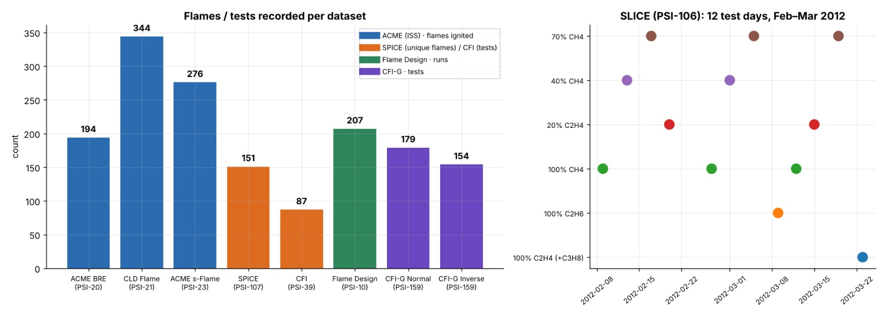
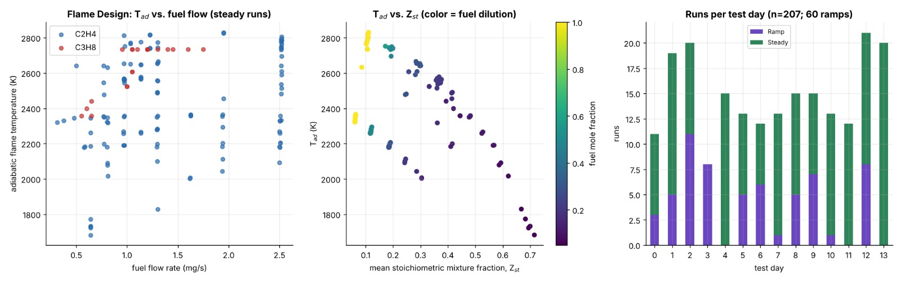
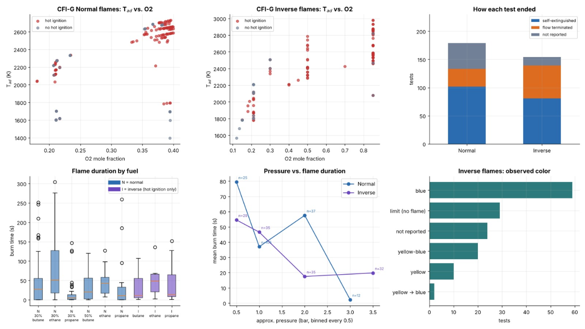
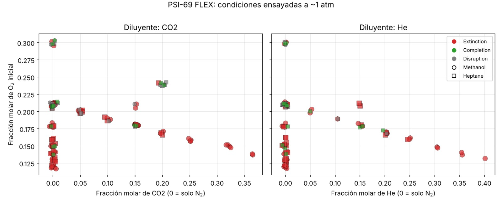
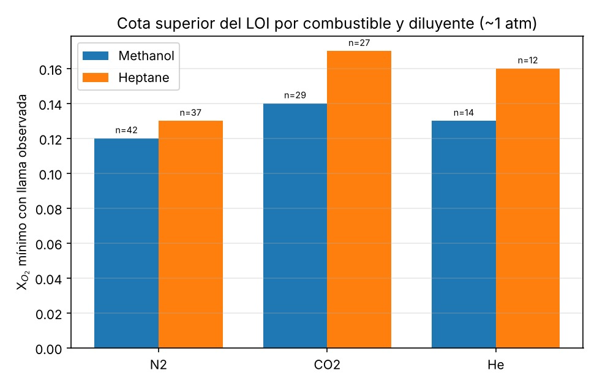

Studies flame behavior in conditions relevant to spacecraft.
Fire safety
Real-time orbital and atmospheric telemetry monitoring cabin materials, combustion mitigation thresholds, and space station safety compliance based on NASA open databases.
Cabin Oxygen
20.9
% O₂
NOMINAL
Virtual cabin sensor · demo readings only
Radiative Heat Flux
1.20
kW/m²
Virtual chamber sensor · scenario limit 2.0 kW/m²
Cabin Pressure
101.3
kPa
14 virtual nodes · no physical sensor connection
FLIGHT EVENT LOG
UTC · SIMULATIONPSI COMBUSTION EXPERIMENT ARCHIVE

What is in the archive: eight datasets, about 1,600 records
What it shows: How many records each dataset in the PSI repository contributes. The three blue bars are the ACME campaigns flown on the ISS: BRE (194 flames ignited), CLD Flame (344) and s-Flame (276), 814 flames in total. The other datasets are SPICE (151 unique flames), CFI (87 tests), Flame Design (207 runs), and CFI-G (179 normal-flame tests and 154 inverse-flame tests).
How to read it: The bars do not share a unit: ACME counts flames ignited, SPICE counts unique flames, and CFI, Flame Design and CFI-G count tests or runs. Compare orders of magnitude, not quality.
The right panel shows SLICE (PSI-106), the oldest campaign: 12 test days between February and March 2012, using methane, ethylene and ethane diluted with nitrogen, plus a final day with propane.

ACME: three campaigns, 814 flames ignited in orbit
What it shows: ACME (Advanced Combustion via Microgravity Experiments) is the largest combustion series in this set of ISS experiments. The top-left panel shows BRE (Burning Rate Emulator) by date and fuel, with a gap between April 2019 and September 2020 and an intense campaign in late 2020.
The top-right panel summarizes BRE by fuel and burner size: 116 flames with pure ethylene, 39 with methane and 39 with 50% ethylene. A 25 mm burner was used on 16 of the 18 test days and a 50 mm burner on 2. The bottom-left panel orders the 32 CLD Flame test days in three blocks: methane, ethylene and an improved coflow design. The bottom-right panel shows s-Flame: 9 days with nitrogen as diluent (145 flames) and 9 with helium (131 flames), with the gray line giving the cumulative total of 276.
How to read it: Bar height is the number of flames ignited that day. Helium did not raise the daily ignition count (14.6 per day on average vs. 16.1 with nitrogen), so the figure should not be read as a helium advantage.

CFI: pressure and oxygen conditions explored with dodecane
What it shows: CFI gathers 87 tests run between March and June 2017 with n-dodecane, pure or mixed with iso-dodecane (22 tests with pure fuel, 24 with a 75/25 mixture and 41 with a 60/40 mixture). Every test used one of two oxygen levels, 17% or 21%, at pressures from 0.5 to 5 atm; points are slightly jittered so they do not overlap. The center panel counts tests per pressure level, with 47 at 1 atm and 14 at 3 atm. The right panel crosses support-fiber use with the atmosphere.
How to read it: “N₂/O₂ without helium” groups all mixtures without helium (21/79 and 17/83). “N₂ below 0.79 (no He)” is a group of 4 tests whose nitrogen fraction is below 0.79 and that contain no helium. The table does not say what makes up the rest of the gas. The 14 tests with helium are a minority, and the high-pressure levels (3 and 5 atm) have too few tests to support firm conclusions on their own.

Flame Design: adiabatic flame temperature vs. flow and dilution
What it shows: Flame Design contains 207 runs over 14 test days, 187 with ethylene and 20 with propane. Of these, 60 are ramps, in which the flow changes during the run, so they have no single flow value and do not appear in the first two panels. The left panel plots adiabatic flame temperature (Tad) against fuel flow for steady runs. The center panel plots it against Zst, the mean stoichiometric mixture fraction, with color showing how diluted the fuel is. The right panel counts runs per test day, separating steady runs from ramps.
How to read it: In the center panel, Tad drops as Zst rises, which in this table happens as the fuel is diluted more. Runs with nearly pure fuel (yellow) reach about 2830 K. On average, propane gives a higher Tad than ethylene (about 2632 K vs. 2425 K).

CFI-G: when a flame ignites, how long it lasts and how it ends
What it shows: CFI-G compares two geometries, normal flames (fuel inside) and inverse flames (oxidizer inside), using ethane, propane and butane. The upper-left panels plot Tad against oxygen fraction, with red for tests with hot ignition and gray for the rest. Normal flames cluster around 21% O₂ and between 35% and 40%, while inverse flames span 12% to 85%. The upper-right panel shows how each test ended: in normal flames 102 self-extinguished, 31 ended when the flow stopped and 46 are not reported; in inverse flames the counts are 81, 58 and 15.
The lower-left panel compares flame duration by fuel: the highest medians are for ethane (about 51 s in normal flames at 30%, 48 s in inverse flames) and the lowest is propane at 30% in normal flames (5 s), with outliers up to 304 s. The lower-center panel relates pressure to mean duration. The lower-right panel counts the colors of inverse flames: 59 blue, 29 at the limit (no visible flame), 20 yellow-blue and 10 yellow.
How to read it: Hot ignition is more common at high Tad, but there are exceptions in both directions. In the pressure panel, inverse flames drop from about 55 s at 0.5 bar to about 18–20 s between 2 and 3.5 bar, while normal flames show no clear trend (80 s at 0.5 bar, 37 at 1, 57 at 2 and 2 at 3 bar, the last with only 12 tests). Each point mixes different fuels and oxygen levels, so pressure cannot be isolated as the cause.
Fire Extinguisher Research
Explore how fire-suppression research studies flames in microgravity, where combustion can behave differently from flames on Earth.
FLEX EXPERIMENT OVERVIEW
The Flame Extinguishment Experiment (FLEX) investigates flame behavior and extinguishment in microgravity. The assistant below is scoped to the FLEX dataset supplied by its service, rather than the live-style telemetry elsewhere in AstroSense.
Ask the assistant to compare records for these two fuels.
Dataset size reported by the supplied FLEX chat service.
FLEX TEST CONDITIONS AND RESULTS (~1 ATM)

Figure 1: Test conditions map (~1 atm)
What it shows: Every FLEX test in this map ran at approximately 1 atm and is positioned by its gas mixture. The left panel shows CO₂ added to air; the right panel shows helium added.
How to read it: Each point is one test. The horizontal axis is the added diluent fraction (0 means only oxygen and nitrogen); the vertical axis is the initial oxygen fraction. Color indicates the outcome: red, flame extinguished; green, droplet burned completely; gray, test ended by droplet disruption. Circles are methanol and squares are heptane.
The diagonal pattern appears because adding a diluent to air automatically lowers the oxygen fraction.
Takeaway: This is the experimental design, not a result. It shows which conditions were actually tested.

Figure 2: Extinction diameter vs. oxygen
What it shows: Droplet diameter when the flame went out, for tests that ended in extinction.
How to read it: A higher point means the flame went out earlier, while the droplet was still larger. A point near 1 mm means the flame lasted almost until the droplet was consumed.
Takeaway: With less oxygen, flames tend to go out at larger droplet sizes, consistent with cooler flames and greater radiative heat loss.
Note: The scatter is large because droplets did not all start at the same size. Read this as a trend, not a precise curve.

Figure 3: Lowest oxygen with a flame observed
What it shows: For each fuel and gas mixture, the lowest oxygen fraction at which a flame was still observed. The n above each bar is the number of tests.
| Fuel | N₂ only | + CO₂ | + He |
|---|---|---|---|
| Methanol | 0.12 (n=42) | 0.14 (n=29) | 0.13 (n=14) |
| Heptane | 0.13 (n=37) | 0.17 (n=27) | 0.16 (n=12) |
Takeaway: Heptane needs more oxygen than methanol to sustain a flame in all three mixtures.
Note: These values are upper bounds on the true Limiting Oxygen Index (LOI), not the LOI itself. CO₂ and He are not ranked by suppression effectiveness here: adding them lowered oxygen in a coupled way, so the comparison mixes experimental design with suppressant effect.
This is an educational data assistant, not emergency or operational fire-safety guidance. Messages and chat history are sent to the external FLEX chat service.
Telemetry & Diagnostic Comparison Console
Stream hardware inputs, select parameter domain, and evaluate live thresholds against NASA safety baselines.
Slash Comparative Diagnostic
READING: 1.2 kW/m² / BASELINE: < 1.8 kW/m²
Parameter is within nominal operational parameters for orbital combustion testing. No intervention required.
NOMINAL